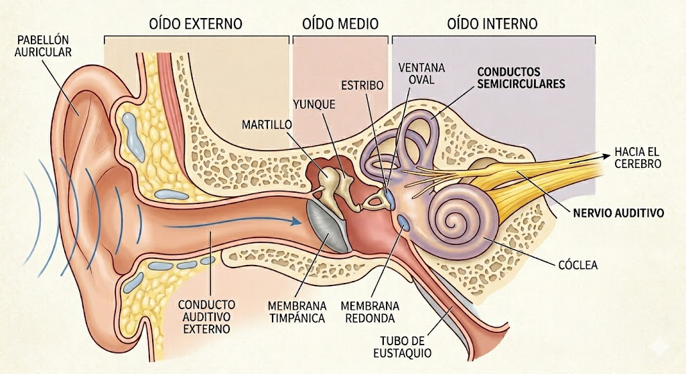

Anatomía del oído
El oído externo comprende el pabellón auricular (pinna), que colecta y filtra el sonido, y el conducto auditivo externo (~2.5 cm), que actúa como resonador y amplifica frecuencias entre 2–4 kHz. Al fondo del conducto se encuentra la membrana timpánica, que vibra ante los cambios de presión sonora. El oído medio es una cavidad aireada que contiene la cadena de tres huesecillos: martillo (unido al tímpano), yunque (intermediario) y estribo (cuya platina se apoya en la ventana oval). Esta cadena actúa como transformador mecánico que resuelve el problema de impedancia acústica entre el aire y el líquido coclear (ganancia ~25–30 dB). La membrana redonda y la trompa de Eustaquio —que equilibra la presión con la faringe— completan el oído medio. El oído interno contiene la cóclea (caracol), donde la energía mecánica se transforma en señal nerviosa mediante las células ciliares, y los conductos semicirculares, responsables del equilibrio. La información auditiva sale por el nervio auditivo hacia el cerebro.

Respuesta en frecuencia del oído externo
La respuesta total del oído externo resulta de la suma de cuatro contribuciones independientes: Torso y hombros: la reflexión desde el hombro llega con retardo (~0.3 ms), reforzando bajas frecuencias (~400–500 Hz, +3–4 dB) y produciendo una pequeña caída en ~1 kHz. Cabeza: la difracción alrededor del cráneo (esfera rígida) amplifica 2–4 kHz hasta +5 dB para incidencia frontal. Pabellón auricular (pinna): la concha agrega una resonancia prominente ~5 kHz (+8 dB) y una muesca de dirección alrededor de ~9 kHz (−5 dB). Canal auditivo: tubo cerrado L≈2.5 cm, resonancia principal a f = c/4L ≈ 3.4 kHz (+14 dB). La suma de estas cuatro contribuciones constituye la HRTF (Head-Related Transfer Function, función de transferencia relacionada con la cabeza): la respuesta en frecuencia que experimenta el sonido desde el campo libre hasta el tímpano, incluyendo los efectos del cuerpo, la cabeza y el pabellón auricular. La HRTF total puede alcanzar +20–22 dB en torno a 3–5 kHz y varía según la dirección de la fuente, lo que permite al sistema auditivo inferir la localización espacial del sonido.